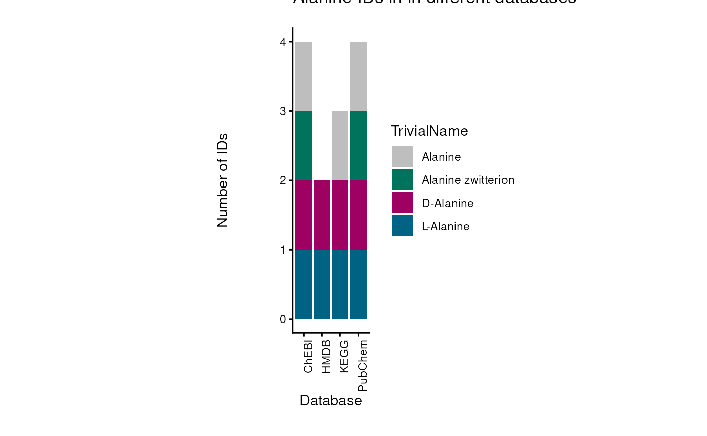
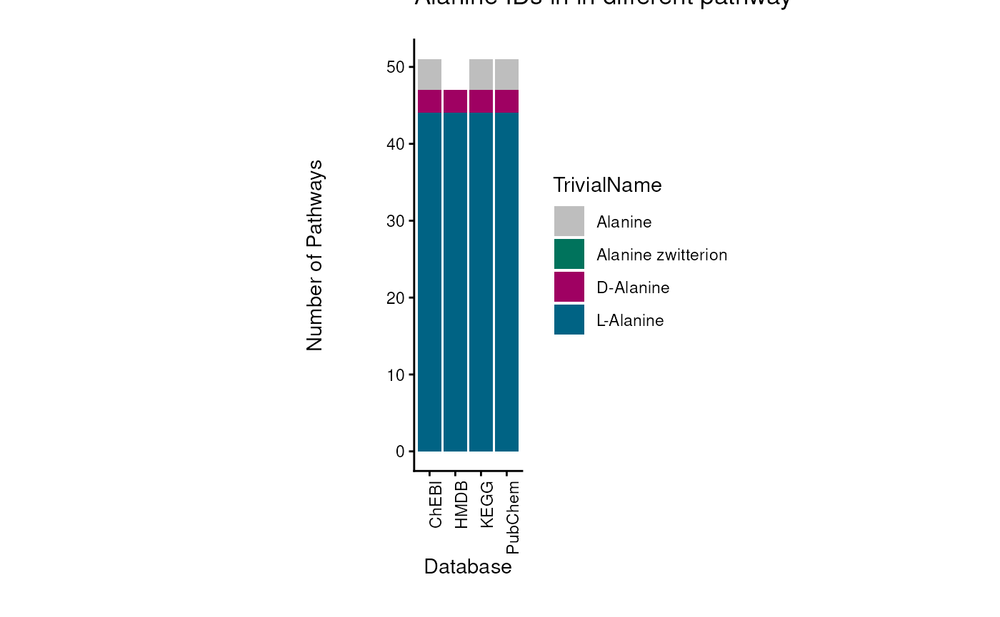
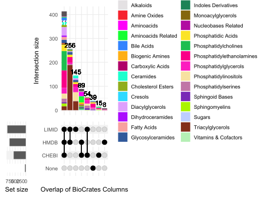
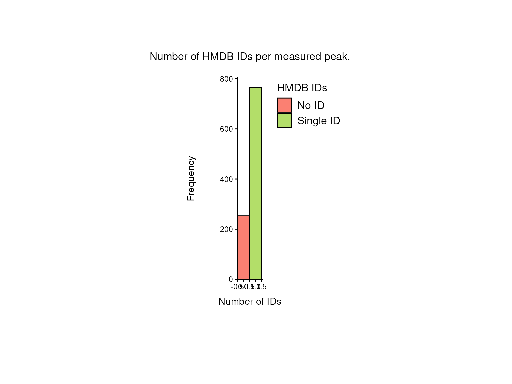
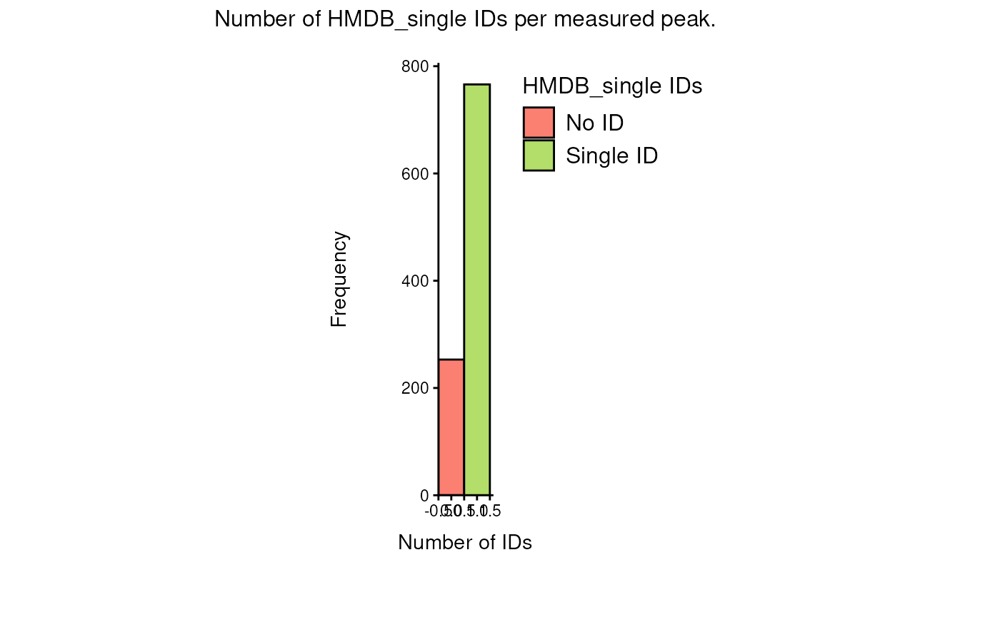

Prior Knowledge - Access & Integration
Christina Schmidt
Heidelberg UniversityMacabe Daley
Heidelberg UniversitySource:
vignettes/pkgdown/prior-knowledge.Rmd
prior-knowledge.Rmd
In this tutorial we showcase how
to use MetaProViz prior knowledge:
- 1. to understand detected metabolite IDs in measured
data.
- 2. to access metabolite prior knowledge and metabolite-gene prior knowledge networks.
- 3. to link experimental data to prior knowledge - the Do’s and Don’ts.
- 4. to deal with many-to-many mapping in your metabolite identifiers.
- 5. to perform pathway enrichment
analysis.
First if you have not done yet, install the required dependencies and
load the libraries:
# 1. Install Rtools if you haven’t done this yet, using the appropriate version (e.g.windows or macOS).
# 2. Install the latest development version from GitHub using devtools
# devtools::install_github("https://github.com/saezlab/MetaProViz")
library(MetaProViz)
library(magrittr)
library(rlang)
library(purrr)
library(dplyr)
library(stringr)
library(tibble)
# Please install the Biocmanager Dependencies:
# BiocManager::install("clusterProfiler")
# BiocManager::install("EnhancedVolcano")
# BiocManager::install("cosmosR")Loading the example data
As part of the
MetaProViz package you can load the example feature
metadata using the function toy_data():1. Metadata of cell line experiment
(CellLine)
Example datasets is publicly available on metabolomics
workbench project PR001418 including metabolic profiles of human
renal epithelial cells HK2 and cell renal cell carcinoma (ccRCC) cell
lines cultured in Plasmax cell culture media (Sciacovelli et al. 2022).
# Load the Pre-processed intracellular data:
data(cellular_meta)
FeatureMetadata_Cells <- cellular_meta%>%
column_to_rownames("Metabolite")2. Metadata of patients tissue experiment
(Tissue)
Example datasets is publicly available in the paper
“An Integrated Metabolic Atlas of Clear Cell Renal Cell Carcinoma”,
which includes metabolomic profiling on 138 matched clear cell renal
cell carcinoma (ccRCC)/normal tissue pairs.
# Load the example data:
data(tissue_meta)
FeatureMetadata_Tissue <- tissue_meta%>%
column_to_rownames("Metabolite")3. Metadata of Biocrates kit
(Biocrates)
Here we use the Biocrates kit feature information of the “MxP® Quant 500 XL
kit” that covers more than 1,000 metabolites from various
biochemical classes.
# Load the example data:
data(biocrates_features)
FeatureMetadata_Biocrates <- biocrates_features1. Metabolite IDs in measured data
Assigning Metabolite IDs to measured
data
The difficulty with assigning metabolite IDs to measured data is the
uncertainty in the detection of metabolites. Indeed, differentiation of
structural isomers (both constitutional isomers and stereoisomers) as
for example the distinction between enantiomers. This leads to loss of
information and hence uncertainty is assigning metabolite IDs.
One example is the metabolite Alanine, which can occur in its L- or D-
form. If in an experiment those enantiomers have not been distinguished,
the correct way would be to either assign two metabolite IDs (L- and
D-Alanine) or a more general Alanine ID without chiral information. Yet,
in reality this is not as trivial:
| TrivialName | HMDB | ChEBI | KEGG | PubChem |
|---|---|---|---|---|
| D-Alanine | HMDB0001310 | 15570 | C00133 | 71080 |
| L-Alanine | HMDB0000161 | 16977 | C00041 | 5950 |
| Alanine | NA | 16449 | C01401 | 602 |
| Alanine zwitterion | NA | 66916 | NA | 57383916 |
Indeed, dependent on the database, the Alanine metabolite can have
different IDs available:

For instance, if we want to assign a HMDB ID, we have to assign both
“HMDB0001310”, “HMDB0000161” to the metabolite Alanine, for ChEBI we
could assign only one, “16449”, but this may lead to other problems as
the ChEBI ID is not specific and may not be part of certain metabolic
pathways. The reason for this is that substrate chirality is critical to
enzymatic processes and stereo selectivity of enzymes to be homochiral
with predominance of one particular enantiomer (e.g. D-sugars, L-amino
acids, etc.).
to showcase the severity of this problem, we can look at the occurrence
of those metabolites in metabolic pathways across different databases.
to do so we searched for those metabolite IDs in the RaMP database (Braisted et al. 2023) and extracted the
pathways they are part of:
| TrivialName | ID | Database | PathwayCount |
|---|---|---|---|
| L-Alanine | 16977 | ChEBI | 44 |
| L-Alanine | 5950 | PubChem | 44 |
| L-Alanine | C00041 | KEGG | 44 |
| L-Alanine | HMDB0000161 | HMDB | 44 |
| D-Alanine | 15570 | ChEBI | 3 |
| D-Alanine | 71080 | PubChem | 3 |
| D-Alanine | C00133 | KEGG | 3 |
| D-Alanine | HMDB0001310 | HMDB | 3 |
| Alanine zwitterion | 57383916 | PubChem | 0 |
| Alanine zwitterion | 66916 | ChEBI | 0 |
| Alanine | 16449 | ChEBI | 4 |
| Alanine | 602 | PubChem | 4 |
| Alanine | C01401 | KEGG | 4 |

This showcases if we choose the ChEBI ID for Alanine (ChEBI ID 16449),
if experimentally the distinction was not possible, we will not map to
any pathway even though the metabolite is part of many pathways. Hence,
we recommend to assign multiple IDs to a measured ID, where specificity
in detection is not given.
Yet, many metabolomics studies do not report multiple IDs, but rather
one ID per measured peak. In some cases the chosen ID is correct in
representing the degree of ambiguity in the detection,
e.g. “Alanine-Zwitterion”, whilst in other cases a specific ID, which
has not been detected in this specificity, e.g. “L-Alanine”. In both
cases this can lead to missed maps to prior knowledge and hence a loss
of information as discussed above.
Hence, we assign multiple IDs to a measured peak, where specificity in
detection may not be given (i.e. amino acids).
# Example Cell-line data:
Input_HMDB <- FeatureMetadata_Cells%>%
dplyr::filter(!HMDB == "NA")%>% # ID in the measured data we want to use, hence we remove NA's
dplyr::select("HMDB", "Pathway") # only keep relevant columns
# Add equivalent IDs:
FeatureMetadata_Cells_AddIDs <- equivalent_id(data= Input_HMDB,
metadata_info = c(InputID="HMDB"),# ID in the measured data, here we use the HMDB ID
from = "hmdb")
#> Warning in equivalent_id(data = Input_HMDB, metadata_info = c(InputID =
#> "HMDB"), : The following IDs are duplicated and removed: HMDB0000725,
#> HMDB0002013, HMDB0000267, HMDB0000755
#> chebi is used to find additional potential IDs for hmdb.| HMDB | Pathway | PotentialAdditionalIDs |
|---|---|---|
| HMDB0000014 | Pyrimidine metabolism | NA |
| HMDB0000033 | Not assigned | NA |
| HMDB0000043 | Not assigned | HMDB0059606 |
| HMDB0000045 | Purine metabolism | NA |
| HMDB0000050 | Purine metabolism | HMDB0004401, HMDB0004402, HMDB0004421 |
| HMDB0000052 | Alanine, aspartate and glutamate metabolism | HMDB0001006 |
| HMDB0000056 | Pyrimidine metabolism | NA |
2. Accessing Prior Knowledge
Metabolite prior knowledge (PK) is essential for the interpretation
of metabolomics data. It can be used to perform pathway enrichment
analysis, compound class enrichment analysis, and by using specific PK
databases, it can be used to study the connection of metabolites and
receptors or transporters.Since the quality and content of the PK will
dictate the success of the downstream analysis and biological
interpretation, it is important to ensure the PK is used
correctly.
Specifically in metabolite PK, the many different PK databases and
resources pose several issues. Indeed, the metabolite identifiers
(e.g. KEGG, HMDB, PubChem, etc.) are not standardized across databases,
and the same metabolite can have multiple identifiers in different
databases. This is known as the many-to-many mapping problem. Moreover,
metabolic pathways that are the basis of the PK databases also includes
co-factors such as ions or other small molecules that are not only part
of most reactions, but can also not be detected in experimentally
acquired data (e.g. H2O, CO2, etc).
to address these issues and provide a standardized way to access and
integrate metabolite PK, we provide access to several prior knowledge
resources and removed molecules such as water. We terme this collection
of metabolite sets MetSigDB (Metabolite signature database).
KEGG pathway-metabolite sets
KEGG pathways that are loaded via KEGG API using the package
KEGGREST and can be used to perform pathway analysis (Kanehisa and Goto 2000).
(KEGG_Pathways)
# This will use KEGGREST to query the KEGG API to load the pathways:
KEGG_Pathways <- metsigdb_kegg()| Description | MetaboliteID | term | Metabolite | pubchem | compound_names |
|---|---|---|---|---|---|
| map00010 | C00022 | Glycolysis / Gluconeogenesis | Pyruvate | 3324 | Pyruvate…. |
| map00010 | C00024 | Glycolysis / Gluconeogenesis | Acetyl-CoA | 3326 | Acetyl-C…. |
| map00010 | C00031 | Glycolysis / Gluconeogenesis | D-Glucose | 3333 | D-Glucos…. |
| map00030 | C00022 | Pentose phosphate pathway | Pyruvate | 3324 | Pyruvate…. |
| map00030 | C00031 | Pentose phosphate pathway | D-Glucose | 3333 | D-Glucos…. |
| map00030 | C00085 | Pentose phosphate pathway | D-Fructose 6-phosphate | 3385 | D-Fructo…. |
Chemical class-metabolite sets
The chemical class-metabolite sets are based on the classification of
metabolites into chemical classes, which can be used to perform compound
class enrichment analysis.
The chemical class-metabolite sets were curated by RaMP-DB, which used
ClassyFire (Braisted et al. 2023). Here we
access them via OmnipathR.
ChemicalClass_MetabSet <- metsigdb_chemicalclass()
#> Cached file loaded from: ~/.cache/RaMP-ChemicalClass_Metabolite.rds| class_source_id | common_name | ClassyFire_class | ClassyFire_super_class | ClassyFire_sub_class |
|---|---|---|---|---|
| HMDB0000001 | 3-Methylhistidine; 1-Methylhistidine | Carboxylic acids and derivatives | Organic acids and derivatives | Amino acids, peptides, and analogues |
| HMDB0000479 | 3-Methylhistidine; 1-Methylhistidine | Carboxylic acids and derivatives | Organic acids and derivatives | Amino acids, peptides, and analogues |
| HMDB0000005 | 2-Ketobutyric acid | Keto acids and derivatives | Organic acids and derivatives | Short-chain keto acids and derivatives |
| HMDB0000008 | 2-Hydroxybutyric acid | Hydroxy acids and derivatives | Organic acids and derivatives | Alpha hydroxy acids and derivatives |
| HMDB0000010 | 2-Methoxyestrone | Steroids and steroid derivatives | Lipids and lipid-like molecules | Estrane steroids |
| HMDB0000163 | D-Maltose | Organooxygen compounds | Organic oxygen compounds | Carbohydrates and carbohydrate conjugates |
| HMDB0000169 | D-Mannose | Organooxygen compounds | Organic oxygen compounds | Carbohydrates and carbohydrate conjugates |
| HMDB0000172 | L-Isoleucine | Carboxylic acids and derivatives | Organic acids and derivatives | Amino acids, peptides, and analogues |
| HMDB0000174 | L-Fucose | Organooxygen compounds | Organic oxygen compounds | Carbohydrates and carbohydrate conjugates |
| HMDB0004940 | N-Glycoloylganglioside GM1; Ganglioside GM2 (d18:1/20:0); N-Glycoloylganglioside GM2 | Sphingolipids | Lipids and lipid-like molecules | Glycosphingolipids |
| HMDB0000772 | Nonadecanoic acid | Fatty Acyls | Lipids and lipid-like molecules | Fatty acids and conjugates |
| HMDB0000780 | Porphinehexacarboxylic acid | Tetrapyrroles and derivatives | Organoheterocyclic compounds | Porphyrins |
| HMDB0000781 | N-Acetylgalactosamine 4-sulphate | Organooxygen compounds | Organic oxygen compounds | Carbohydrates and carbohydrate conjugates |
Create pathway-metabolite sets
The function make_gene_metab_set can be used to convert
gene names to metabolite names by using a PK network of metabolic
reactions calls CosmosR (Dugourd et al.
2021). This function is useful if you want to perform pathway
enrichment analysis on available gene-sets such as the Hallmarks
gene-sets from MSigDB (Castanza et al.
2022). Moreover, it enables you to perform combined pathway
enrichment analysis on metabolite-gene sets, if you have other data
types such as proteomics measuring the enzymes expression.
The Hallmarks (Liberzon et al. 2015)
gene-set and Gaude (Gaude and Frezza 2016)
gene-set is available in the package MetaProViz and can be
loaded using the function metsigdb_hallmarks() and
metsigdb_gaude respectively.
# Load the example gene-sets:
data(hallmarks)
Hallmark_Pathways <- hallmarks
data(gaude_pathways)
Gaude_Pathways <- gaude_pathways| term | gene |
|---|---|
| HALLMARK_BILE_ACID_METABOLISM | GSTK1 |
| HALLMARK_BILE_ACID_METABOLISM | ABCG4 |
| HALLMARK_GLYCOLYSIS | LDHC |
| HALLMARK_GLYCOLYSIS | ARPP19 |
| HALLMARK_GLYCOLYSIS | LDHC |
| HALLMARK_GLYCOLYSIS | ARPP19 |
| HALLMARK_GLYCOLYSIS | CENPA |
| gene | term | UniqueGene |
|---|---|---|
| CPT1A | Carnitine shuttle | Unique |
| CPT1B | Carnitine shuttle | Unique |
| CPT1C | Carnitine shuttle | Unique |
| CPT2 | Carnitine shuttle | Unique |
| CRAT | Carnitine shuttle | Unique |
| SLC22A4 | Carnitine shuttle | In multiple Pathways |
| SLC22A5 | Carnitine shuttle | In multiple Pathways |
| SLC25A20 | Carnitine shuttle | In multiple Pathways |
| ACO1 | Citric Acid Cycle | Unique |
| ACO2 | Citric Acid Cycle | Unique |
| GOT1 | Citric Acid Cycle | In multiple Pathways |
Now we can use the function make_gene_metab_set to
translate the gene names to metabolite names.
# Translate gene names to metabolite names
Hallmarks_GeneMetab <- make_gene_metab_set(input_pk=Hallmark_Pathways,
metadata_info=c(Target="gene"),
pk_name="Hallmarks")
Gaude_GeneMetab <- make_gene_metab_set(input_pk=Gaude_Pathways,
metadata_info=c(Target="gene"),
pk_name="Gaude")| term | feature |
|---|---|
| HALLMARK_GLYCOLYSIS | ME2 |
| HALLMARK_GLYCOLYSIS | LDHC |
| HALLMARK_GLYCOLYSIS | FKBP4 |
| HALLMARK_GLYCOLYSIS | HMDB0000241 |
| HALLMARK_GLYCOLYSIS | HMDB0000570 |
| HALLMARK_GLYCOLYSIS | HMDB0000122 |
Given that we have the gene-metabolite-sets, we can now also run
enrichment analysis on combined data types, once including the
metabolite Log2FC and one including gene Log2FC from
e.g. transcriptomics or proteomics data. Yet, it is important to keep in
mind that generally we detect less metabolites than genes and hence this
may bias the results obtained from combined enrichment analysis.
MetaLinksDB metabolite-receptor & metabolite-transporter sets
The MetaLinks database is a manually curated database of
metabolite-receptor and metabolite-transporter sets that can be used to
study the connection of metabolites and receptors or transporters (Farr et al. 2024).
MetaLinksDB <- metsigdb_metalinks()| hmdb | metabolite | gene_symbol | protein_type | source | mor | type | transport_direction | mode_of_regulation |
|---|---|---|---|---|---|---|---|---|
| HMDB0000538 | Adenosine triphosphate | UBA6 | NA | hmr | -1 | Production-Degradation | NA | Inhibiting |
| HMDB0000538 | Adenosine triphosphate | UBA6 | NA | recon | -1 | Production-Degradation | NA | Inhibiting |
| HMDB0000122 | D-Glucose | SLC5A10 | “transporter” | recon | 1 | Production-Degradation | out | Activating |
| HMDB0000143 | D-Galactose | SLC5A10 | “transporter” | recon | 1 | Production-Degradation | out | Activating |
| HMDB0001341 | ADP | TLR4 | “catalytic_receptor” | Stitch | 0 | Ligand-Receptor | NA | Binding |
| HMDB0000151 | Estradiol | TNFRSF11B | “catalytic_receptor” | Stitch | -1 | Ligand-Receptor | NA | Inhibiting |
| hmdb | metabolite | pubchem | metabolite_subclass | uniprot | gene_symbol | protein_type | source | db_score | experiment_score | combined_score | mor | type | transport_direction | mode_of_regulation | term_specific |
|---|---|---|---|---|---|---|---|---|---|---|---|---|---|---|---|
| HMDB0000660 | D-Fructose | 439709 | Carbohydrates and carbohydrate conjugates | A0PJK1 | SLC5A10 | “transporter” | recon | NA | NA | NA | 1 | Production-Degradation | out | Activating | transporter_Production-Degradation |
| HMDB0002212 | Arachidic acid | 10467 | Fatty acids and conjugates | A6NFH5 | FABP12 | “other_protein” | hmr | NA | NA | NA | 1 | Production-Degradation | out | Activating | other_protein_Production-Degradation |
| HMDB0037790 | Polyethylene glycol | 174 | Alcohols and polyols | O00206 | TLR4 | “catalytic_receptor” | Stitch | 413 | 0 | 483 | 0 | Ligand-Receptor | NA | Binding | catalytic_receptor_Ligand-Receptor |
| HMDB0034442 | L-trans-alpha-Amino-2-carboxycyclopropaneacetic acid | 1271 | Amino acids, peptides, and analogues | O00222 | GRM8 | “gpcr” | Stitch | 367 | 0 | 888 | 0 | Ligand-Receptor | NA | Binding | gpcr_Ligand-Receptor |
Comparison of PK coverage
We have now loaded a number of different PK sources (details above)
and aim to compare the overlap in coverage between these PK sources to
understand if there are certain genes or metabolites covered by one PK
resource but not the others. As an example, we will compare the
resources containing gene-metabolite sets (Hallmarks, Gaude,
MetalinksDB) using compare_pk() function, which will
generate a combined datatable and visualises it as an Upset plot. The
Upset plot shows the overlap of coverage, similar to how a Venn diagram
works, but enable to visualize multiple combinations clearly.
#> Warning: `aes_string()` was deprecated in ggplot2 3.0.0.
#> ℹ Please use tidy evaluation idioms with `aes()`.
#> ℹ See also `vignette("ggplot2-in-packages")` for more information.
#> ℹ The deprecated feature was likely used in the MetaProViz package.
#> Please report the issue at <https://github.com/saezlab/MetaProViz/issues>.
#> This warning is displayed once every 8 hours.
#> Call `lifecycle::last_lifecycle_warnings()` to see where this warning was
#> generated.
#> Warning: Using `size` aesthetic for lines was deprecated in ggplot2 3.4.0.
#> ℹ Please use `linewidth` instead.
#> ℹ The deprecated feature was likely used in the ComplexUpset package.
#> Please report the issue at
#> <https://github.com/krassowski/complex-upset/issues>.
#> This warning is displayed once every 8 hours.
#> Call `lifecycle::last_lifecycle_warnings()` to see where this warning was
#> generated.
#> Warning: themes$intersections_matrix is not a valid theme.
#> Please use `theme()` to construct themes.
#> Warning: `legend.margin` must be specified using `margin()`
#> ℹ For the old behavior use `legend.spacing`
#> Warning: themes$intersections_matrix is not a valid theme.
#> Please use `theme()` to construct themes.
#> Warning: selected_theme is not a valid theme.
#> Please use `theme()` to construct themes.
#> Warning: `legend.margin` must be specified using `margin()`
#> ℹ For the old behavior use `legend.spacing`
#> Warning: selected_theme is not a valid theme.
#> Please use `theme()` to construct themes.
#> Warning: themes$overall_sizes is not a valid theme.
#> Please use `theme()` to construct themes.
#> Warning: `legend.margin` must be specified using `margin()`
#> ℹ For the old behavior use `legend.spacing`
#> Warning: themes$overall_sizes is not a valid theme.
#> Please use `theme()` to construct themes.
#> Note: Could not render upset plot to screen due to theme compatibility issues. Plot was saved to file successfully.
The table includes all features of the three PK resources we decided to compare. Additionally, it includes a column for each PK resource with value 1 if the feature is present in the PK resource and 0 if it is not. The column “Type” specifies with ID type the feature is corresponding to, here either metabolite (HMDB) or gene, which is used for visualisation purposes in the upset plot.
| Feature | Hallmarks | Gaude | MetalinksDB | Type | None |
|---|---|---|---|---|---|
| FABP4 | 1 | 0 | 1 | gene | 0 |
| ADIPOQ | 1 | 0 | 0 | gene | 0 |
| PPARG | 1 | 0 | 1 | gene | 0 |
| LIPE | 1 | 0 | 1 | gene | 0 |
| DGAT1 | 1 | 1 | 1 | gene | 0 |
| LPL | 1 | 1 | 1 | gene | 0 |
| CPT2 | 1 | 1 | 1 | gene | 0 |
| CD36 | 1 | 0 | 1 | gene | 0 |
The upset plot shows that MetalinksDB has unique genes and metabolites
not present in the other resources. This is to be expected, since
MetalinksDB focuses on receptors, transporters and metabolic enzymes,
whilst Gaude and Hallmakrs focus on pathways.
Since Gaude only focuses on metabolic enzymes of pathways, it contains a
low number of genes and hence has a small amount of unique genes and
metabolites. In this regard it makes sense that Hallmarks includes many
unique genes, since Hallmarks also includes other genes and pathways not
related to metabolism. Between Hallmarks and Gaude we observe a high
overlap with metabolites, which can be explained since both gene sets
are assigned metabolites by using the same metabolic pathways in the
backend of make_gene_metab_set and it is important to keep
in mind that this dictates the gene-metabolite associations added.
3. Linking experimental data to prior knowledge
Now that we have loaded the prior knowledge and inspected the overlap
of genes and metabolites between the different PK resources, in this
section we want to link our experimental data to the PK.
The experimental data in this example will be the data loaded in section
1 (Loading the example data). Whichever resource the experimental data
resembles, we recommend to follow this overall approach:
1. Determine the metabolite identifiers from the experimental data and
inspect their coverage.
2. Select the metabolite identifiers from the experimental data, which
can be used to link to the PK of interest.
3. Connect metabolite identifiers to the PK and assess overlap.
Here one can select any combination of experimental data and PK. This
selection should be based on the experimental data at hand and the
biological research question.
For this vignette, we will focus on the combination of Biocrates
experimental data and MetalinksDB PK. The reason for using the landscape
of metabolites included in the Biocrates Kit is that Biocrates has
assigned mutliple metabolite IDs to each measurement (Lipid maps, HMDB,
ChEBI) and if needed assigned multiple IDs to one measurement (e.g. the
two HMDB IDs of L- and D-Alanine).
1. Determine identifiers and inspect coverage
First we determine the identifiers and inspect the coverage.
In many experimentally aquired data, there can be different metabolite
IDs used to describe the metabolite. In the Biocrates data the available
metabolite identifiers are mostly CHEBI, HMDB, and LIMID that could be
linked to PK resources. Now we select these metabolite identifier
columns to count the coverage and look at the combinations of the
coverage grouped by the class of metabolite. This helps us to understand
what to expect, when linking the data to prior knowledge.
#> Warning: themes$intersections_matrix is not a valid theme.
#> Please use `theme()` to construct themes.
#> Warning: `legend.margin` must be specified using `margin()`
#> ℹ For the old behavior use `legend.spacing`
#> Warning: themes$intersections_matrix is not a valid theme.
#> Please use `theme()` to construct themes.
#> Warning: selected_theme is not a valid theme.
#> Please use `theme()` to construct themes.
#> Warning: `legend.margin` must be specified using `margin()`
#> ℹ For the old behavior use `legend.spacing`
#> Warning: selected_theme is not a valid theme.
#> Please use `theme()` to construct themes.
#> Warning: themes$overall_sizes is not a valid theme.
#> Please use `theme()` to construct themes.
#> Warning: `legend.margin` must be specified using `margin()`
#> ℹ For the old behavior use `legend.spacing`
#> Warning: themes$overall_sizes is not a valid theme.
#> Please use `theme()` to construct themes.
#> Note: Could not render upset plot to screen due to theme compatibility issues. Plot was saved to file successfully.
| TrivialName | CHEBI | HMDB | LIMID | None | Class |
|---|---|---|---|---|---|
| 1-Met-His | 1 | 1 | 0 | 0 | Aminoacids Related |
| 3-IAA | 1 | 1 | 0 | 0 | Indoles Derivatives |
| 3-IPA | 1 | 1 | 0 | 0 | Indoles Derivatives |
| 3-Met-His | 1 | 1 | 0 | 0 | Aminoacids Related |
| 5-AVA | 1 | 1 | 1 | 0 | Aminoacids Related |
| AABA | 1 | 1 | 1 | 0 | Aminoacids Related |
| AbsAcid | 1 | 1 | 1 | 0 | Hormones |
| Ac-Orn | 1 | 1 | 0 | 0 | Aminoacids Related |
These results tell us that:
Less than half the metabolites had CHEBI+HMDB+LIMID (n=413), which isn’t great but probably higher than we have expected.
-
If you relied only upon -
CHEBI: then you would miss at least 256 metabolites with HMDB+LIMID
HMDB: then you would miss at least 54 metabolites with CHEBI+LIMID
LIMID: then you would miss at least 89 metabolites with CHEBI+HMDB
However there are two things to note about these observations above.
The first is that these numbers are minimums, the real values are a little higher once you add for instance metabolites with just CHEBI or just LIMID, etc. So actually, relying upon only LIMID means we miss 151 biocrates metabolites (89 with only HMDB/ChEBI + 15 with only CHEBI + 8 with only HMDB and 39 with no LIMID/CHEBI/HMDB identifiers).
The second point is more nuanced but just as important: we need to keep in mind that there is not a direct 1:1 relationship between the number of Biocrates metabolites with, for instance, a ChEBI ID, and the number of unique ChEBI IDs that they map to. This upset plot is treating each Biocrates metabolite as an individual entry and categorising whether it has a ChEBI, HMDB, LIMID ID, etc. However we are not considering what those ChEBI, HMDB, LIMIDs actually are. So it is possible that there are cases where the number of metabolites is higher, or lower, than the number of unique IDs due to multimapping.
For example, if we have 3 Biocrates metabolites with only HMDB IDs. These would count as 3 entries in the upset plot. But two of these Biocrates metabolites could both map to the same HMDB ID, whereas the other Biocrates metabolite could map to 6 different HMDBs. In this case, there are 3 Biocrates metabolites with HMDBs but 7 unique HMDBs. Hence, it is important to keep this in mind when interpreting the upset plot.
2. Select identifiers to link to PK of interest
We have inspected the experimental coverage of the metabolite IDs
from the Biocrates kit. Next, we have to choose which metabolite
identifier to use to link to the PK of choice. Often this choice is
dictated by the prior knowledge resource as most of them use a specific
identifier.
Here we will use MetalinksDB, which uses HMDB IDs as metabolite
identifiers, hence it is best to use the HMDB IDs to link the Biocrates
features to the resource. Noteworthy, in some cases the Biocrates
metabolites have multiple HMDB IDs listed per metabolite:
# Count entries and record NA information
result_bioc_hmdb_count <- count_id(FeatureMetadata_Biocrates, "HMDB")
# Access the processed data:
processed_df_bioc_hmdb_count <- result_bioc_hmdb_count$resultFrom this plot we can make a few observations: 1. The number of biocrates cells without any HMDB at all is very high (n=253). 2. Whilst a number of biocrates cells have only a single HMDB ID associated with them (n=314), the majority of biocrates metabolites actually have multiple entries (n=452). 3. For those with multiple, this ranges from 2-20 HMDB entries per biocrates cell!
With so many biocrates cells linked to multiple HMDB IDs there are
different ways to deal with this (e.g. select a single HMDB ID in cases
where we have multiple). We discuss the pros and cons of this later in
section: Bonus: Are multiple metabolite IDs
helpful or a hindrance?. But for now, we will proceed with making
the connections to the PK using all HMDBs, which the MetaProViz function
checkmatch_pk_to_data() has been designed to handle.
3. Make connection to PK and assess overlap
Here we connect the experimental Biocrates table to the MetalinksDB
PK using the HMDB IDs using the checkmatch_pk_to_data()
function.
Biocrates_to_MetalinksDB <- checkmatch_pk_to_data(data = FeatureMetadata_Biocrates,
input_pk = MetaLinksDB,
metadata_info = c(InputID="HMDB", PriorID="hmdb", grouping_variable=NULL))
#> Warning in checkmatch_pk_to_data(data = FeatureMetadata_Biocrates, input_pk =
#> MetaLinksDB, : 253 NA values were removed from column HMDB
#> Warning in checkmatch_pk_to_data(data = FeatureMetadata_Biocrates, input_pk =
#> MetaLinksDB, : 4 duplicated IDs were removed from column HMDB
#> No metadata_info grouping_variable provided. If this was not intentional, please check your input.
#> Warning in checkmatch_pk_to_data(data = FeatureMetadata_Biocrates, input_pk =
#> MetaLinksDB, : 40766 duplicated IDs were removed from PK column hmdb
#> data has multiple IDs per measurement = TRUE. input_pk has multiple IDs per entry = FALSE.
#> data has 762 unique entries with 2027 unique HMDB IDs. Of those IDs, 176 match, which is 8.68278243709916%.
#> input_pk has 1128 unique entries with 1128 unique hmdb IDs. Of those IDs, 176 are detected in the data, which is 15.6028368794326%.
#> Warning in checkmatch_pk_to_data(data = FeatureMetadata_Biocrates, input_pk =
#> MetaLinksDB, : There are cases where multiple detected IDs match to multiple
#> prior knowledge IDs of the same category
This returns some warning messages and 4 tables:
data_summary: a summary table with links to the prior knowledge. Includes pointers if any action is required This is however with any NA values or duplicates of the InputID (e.g. ‘HMDB’) removed from the table.GroupingVariable_summary: This is an extended version of the summary, where GroupingVariable is extended. e.g. for pathway-metabolite sets this would include duplicated InputIDs as they are in multiple pathwaysdata_long: all versus all commparison to enable checking in a case-by-case basis.
In some cases we will expect to have only input ID linked to one
entry in the PK. But this won’t always be the case, and as already
discussed in the last section above, in many cases here we will have
multiple HMDB IDs per single biocrates metabolite cell. The
checkmatch_pk_to_data() has been designed with this in
mind, by default splitting any comma separated values in the InputID (or
PriorID) into separate entities, counting the number of links between
these, and reporting this to the user.
Let’s take a look at the results:
| HMDB | matches | original_count | matches_count | GroupingVariable | Count_FeatureIDs_to_GroupingVariable | Group_Conflict_Notes | Unique_GroupingVariable_count | ActionRequired | InputID_select | Action_Specific |
|---|---|---|---|---|---|---|---|---|---|---|
| HMDB0000001 | NA | 1 | 0 | NA | NA | None | 0 | None | HMDB | None |
| HMDB0000033 | NA | 1 | 0 | NA | NA | None | 0 | None | HMDB | None |
| HMDB0000036 | HMDB0000036 | 1 | 1 | OneGroup | 1 | None | 1 | None | HMDB | None |
| HMDB0000043 | HMDB0000043 | 1 | 1 | OneGroup | 1 | None | 1 | None | HMDB | None |
| HMDB0000056 | HMDB0000056 | 1 | 1 | OneGroup | 1 | None | 1 | None | HMDB | None |
| HMDB0000062 | HMDB0000062 | 1 | 1 | OneGroup | 1 | None | 1 | None | HMDB | None |
| HMDB0000063 | HMDB0000063 | 1 | 1 | OneGroup | 1 | None | 1 | None | HMDB | None |
| HMDB0000072, HMDB0000958 | NA | 2 | 0 | NA, NA | NA, NA | None | 0 | None | HMDB | None |
For a few metabolite classes from the biocrates kit every metabolite
has a HMDB ID and a corresponding entry in MetalinksDB. Whilst for a
number of classes of metabolites, we see that they will not be
represented in the MetalinksDB PK at all, either because we do not have
a HMDB ID associated with the Biocrates metabolite, or because
MetalinksDB does not include a HMDB ID for that metabolite.
This poor coverage could be a concern for the analysis if we are
interested in analysing many of these classes, since it will mean in
this case that our experimental results for Phosphatidylglycerols for
instance will not be linked to PK. In any case we will certainly need to
keep this in mind for downstream analysis and the interpretation of
results, so that we don’t overinterpret results that for instance have a
large number of Amino Acids, or falsely assume that the absence of
Phosphatidylinositols in our PK integration results means that they are
not present or important in our data.
Let’s turn back to consider the number of HMDB IDs we have in the
Biocrates data and ask ourself a question: is it helpful or detrimental
to have multiple IDs? To answer this, we will take only the first HMDB
of each cell with multiple HMDB IDs and test to see this has worked.
#Number of matches:
MultipleIDs <- Biocrates_to_MetalinksDB$data_summary%>%
summarise(total_matches_count = sum(matches_count, na.rm = TRUE))%>%
mutate(Name = "MultipleIDs")
######################################
# Extract first ID:
extract_first_id <- function(id_col) {
map_chr(as.character(id_col), function(x) {
# Check for NA or empty string
if (is.na(x) || x == "") {
return(NA)
}
# Split on comma (adjust the delimiter if needed)
parts <- unlist(strsplit(x, split = ","))
# Return the first value after trimming any whitespace
return(trimws(parts[1]))
})
}
# Create a copy of the df
FeatureMetadata_Biocrates_singleHMDB <- FeatureMetadata_Biocrates
# Get the first entry of each HMDB ID
FeatureMetadata_Biocrates_singleHMDB$HMDB_single <- extract_first_id(FeatureMetadata_Biocrates$HMDB)
# Visually check that the single ID function has worked
# Count entries and record NA information
result_bioc_hmdb_count_single <- count_id(FeatureMetadata_Biocrates_singleHMDB, "HMDB_single")
# Check the macthes:
Biocrates_to_MetalinksDB_singleHMDB <- checkmatch_pk_to_data(data = FeatureMetadata_Biocrates_singleHMDB,
input_pk = MetaLinksDB,
metadata_info = c(InputID="HMDB_single", PriorID="hmdb", grouping_variable=NULL))
#> Warning in checkmatch_pk_to_data(data = FeatureMetadata_Biocrates_singleHMDB, :
#> 253 NA values were removed from column HMDB_single
#> Warning in checkmatch_pk_to_data(data = FeatureMetadata_Biocrates_singleHMDB, :
#> 49 duplicated IDs were removed from column HMDB_single
#> No metadata_info grouping_variable provided. If this was not intentional, please check your input.
#> Warning in checkmatch_pk_to_data(data = FeatureMetadata_Biocrates_singleHMDB, :
#> 40766 duplicated IDs were removed from PK column hmdb
#> data has multiple IDs per measurement = FALSE. input_pk has multiple IDs per entry = FALSE.
#> data has 717 unique entries with 717 unique HMDB_single IDs. Of those IDs, 147 match, which is 20.5020920502092%.
#> input_pk has 1128 unique entries with 1128 unique hmdb IDs. Of those IDs, 147 are detected in the data, which is 13.031914893617%.
#Number of matches:
SingleIDs <- Biocrates_to_MetalinksDB_singleHMDB$data_summary%>%
summarise(total_matches_count = sum(matches_count, na.rm = TRUE))%>%
mutate(Name = "SingleID")
##############################
#Compare:
bind_rows(MultipleIDs, SingleIDs)%>%
kableExtra::kbl(caption = "Comparison of IDs found in MetalinksDB PK when having multiple versus a random single HMDB ID in the measured data.", row.names=FALSE) %>%
kableExtra::kable_classic(full_width = FALSE, html_font = "Cambria", font_size = 12)| total_matches_count | Name |
|---|---|
| 208 | MultipleIDs |
| 147 | SingleID |
This shows using Multi HMDBs has resulted in more metabolites from Biocrates being able to be linked to MetalinksDB than what would have been possible if we only used the first HMDB available to us. Hence while having multiple IDs for a single detected peak may add complexity, we would recommend against prematurely dropping any IDs until you map to the PK or have thoroughly assessed what impact the removal may have.
4. Translate IDs
Important Information: Translating IDs between databases e.g. KEGG to HMDB is a non-trivial task, and it is expected for one original ID to link to many translated IDs, and vice versa. We discuss the implications throughout this vignette and leave it to user discretion to select the most appropriate ID based on their research question and data.
Across the different prior knowledge resources (see also tables
above) specific metabolite IDs are used and hence depending on the prior
knowledge resource a specific metabolite ID is required.
If we want to convert or ‘translate’ those IDs to another commonly used
form of ID, for instance because our measured data uses another type of
ID, we can make use of the translate_id() function. This is
based on OmniPathR
and RaMP-DB (Braisted et al. 2023) on the
backend of our function and currently supports ID translation of
metabolites to and from the following formats:
- KEGG
- HMDB
- ChEBI
- PubChem
As an example we are translating the KEGG pathways we loaded with
metsigdb_kegg into HMDB ids:
KEGG_Pathways_Translated <- translate_id(data= KEGG_Pathways,
metadata_info = c(InputID="MetaboliteID", grouping_variable="term"),
from = c("kegg"),
to = c("hmdb", "pubchem"))| Description | MetaboliteID | term | Metabolite | pubchem | compound_names | hmdb |
|---|---|---|---|---|---|---|
| map00010 | C00022 | Glycolysis / Gluconeogenesis | Pyruvate | 1060, 107735 | Pyruvate…. | HMDB0000243 |
| map00010 | C00024 | Glycolysis / Gluconeogenesis | Acetyl-CoA | 444493, 181 | Acetyl-C…. | HMDB0001206, HMDB0247926 |
| map00010 | C00031 | Glycolysis / Gluconeogenesis | D-Glucose | 64689, 5793, 107526 | D-Glucos…. | HMDB0000122, HMDB0304632, HMDB0000516, HMDB0003340, HMDB0006564, HMDB0062170 |
| map00053 | C15926 | Ascorbate and aldarate metabolism | beta-L-Galactose 1-phosphate | beta-L-G…. | ||
| map00053 | C15930 | Ascorbate and aldarate metabolism | L-Galactonate | 604 | L-Galact…. | HMDB0253886 |
| map00120 | C13550 | Primary bile acid biosynthesis | Cerebrosterol | 121948 | Cerebros…. | HMDB0001419 |
| map00120 | C15518 | Primary bile acid biosynthesis | (24S)-Cholest-5-ene-3beta,7alpha,24-triol | 11954196 | (24S)-Ch…. | HMDB0060136 |
| map00120 | C15519 | Primary bile acid biosynthesis | 25-Hydroxycholesterol | 53477807, 65094, 3247051, 42608393 | 25-Hydro…. | HMDB0006247 |
Here we can immediately see that despite the ID translation, some of the
translations between the KEGG MetaboliteID and the HMDB or PubChem IDs
have failed, resulting in NA values. to get a better understanding of
the combinations of these, let’s visualise the translation for each of
the ID types.
pk_comp_res_keggtrans <- compare_pk(data = list(kegg_translated = KEGG_Pathways_Translated$TranslatedDF),
metadata_info = list(kegg_translated = c("hmdb", "pubchem")),
plot_name = "IDs available after KEGG ID Translation")
We can also note from the previous table that it becomes apparent that
the translation of IDs is not a one-to-one mapping, but rather a
one-to-many mapping. In fact it is very common that an ID from one
format will have a genuine one-to-many relationship with the other
format (e.g. one KEGG ID maps to multiple HMDB IDs) or even a
many-to-many relationship, where some of the IDs from the new format
link back to multiple IDs in the original format (e.g. two different
KEGG IDs map to multiple HMDS IDs, some of which are shared between
them).
This comes with many implications for the analysis that will be
discussed in the next section.
4.1 Mapping problems
The complexities of translating metabolite IDs are demonstrated here
(Fig.2). The relationships between Original IDs (e.g. KEGG) and
Translated IDs (e.g. HMDB), can be quite complex and in fact we
encounter one-to-one (no matches were found for the ID),
one-to-none ( direct #relationship was established),
one-to-many (multiple matches were found for the ID.
i.e. it is ambiguously mapped) and many-to-many ( considers
the relationships between the Translated IDs to Original IDs , where a
translated ID ambiguously maps back to multiple different Original IDs)
mappings.
For enrichment analysis the translation from KEGG IDs to HMDB IDs
increases the pathways size, i.e. how many metabolites are in the
pathway “Glycolysis / Gluconeogenesis - Homo sapiens (human)”, which
would in turn inflate/deflate the enrichment results and hence it would
be desired to keep the number of metabolites in a pathway
consistent.

Because of this complexity the output of translate_id()
includes not only the Translation table showcased above, but
additionally information about the mapping ambiguity as well as a
summary of the relationships between the Original and Translated
IDs.
Indeed, the translation of e.g. KEGG to hmdb and pubchem includes
multiple data frames including a summary of the mapping
occurrences:
names(KEGG_Pathways_Translated)
#> [1] "TranslatedDF" "TranslatedDF_MappingInfo"
#> [3] "Mappingsummary_hmdb" "Mappingsummary_pubchem"| term | many_to_many | one_to_many | one_to_none | one_to_one | total | to_many | to_none | to_one | to_total | from_many | from_one | from_total | many_to_one | scope |
|---|---|---|---|---|---|---|---|---|---|---|---|---|---|---|
| Glycolysis / Gluconeogenesis | 12 | 23 | 6 | 13 | 54 | 12 | 6 | 13 | 31 | 6 | 37 | 43 | 0 | group |
| Citrate cycle (TCA cycle) | 0 | 17 | 3 | 9 | 29 | 8 | 3 | 9 | 20 | 0 | 27 | 27 | 0 | group |
| Pentose phosphate pathway | 20 | 17 | 10 | 16 | 63 | 11 | 10 | 16 | 37 | 10 | 34 | 44 | 0 | group |
| Ascorbate and aldarate metabolism | 10 | 39 | 26 | 15 | 90 | 16 | 26 | 15 | 57 | 5 | 55 | 60 | 0 | group |
| Fatty acid biosynthesis | 0 | 14 | 46 | 6 | 66 | 6 | 46 | 6 | 58 | 0 | 21 | 21 | 0 | group |
| Fatty acid elongation | 8 | 48 | 11 | 3 | 70 | 25 | 11 | 3 | 39 | 4 | 52 | 56 | 0 | group |
We also have the ability to extract a long version of the DF that
includes a row for each mapping occurrence, which can be useful for
downstream analysis. Yet, this can become very large dependent on the
amount of many-to-many mappings, hence by default we do not generate
this summary. Within the translate_id() you can set the
parameter summary =TRUE or in case you have a dataframe
that includes both, original and translated ID, you can use the function
mapping_ambiguity() to generate this long summary as well
as the mapping summary in general.
# Option 1:
KEGG_Pathways_TranslatedSum <- translate_id(data= KEGG_Pathways,
metadata_info = c(InputID="MetaboliteID", grouping_variable="term"),
from = c("kegg"),
to = c("hmdb", "pubchem"),
summary =TRUE)
# Option 2:
MappingProblems <- mapping_ambiguity(
data =
KEGG_Pathways_Translated[["TranslatedDF"]] %>%
dplyr::rename("KEGG"="MetaboliteID") %>%
dplyr::select(Description, KEGG, term, Metabolite, hmdb),
from = "KEGG",
to = "hmdb",
grouping_variable = "term",
summary=TRUE
)| KEGG | hmdb | term | KEGG_to_hmdb | Count(KEGG_to_hmdb) | hmdb_to_KEGG | Count(hmdb_to_KEGG) | Mapping |
|---|---|---|---|---|---|---|---|
| C00002 | HMDB0000538 | Bacterial secretion system | C00002 –> HMDB0000538, HMDB0257997 | 2 | HMDB0000538 –> C00002 | 1 | one-to-many |
| C00002 | HMDB0000538 | Biosynthesis of cofactors | C00002 –> HMDB0000538, HMDB0257997 | 2 | HMDB0000538 –> C00002 | 1 | one-to-many |
| C00024 | HMDB0247926 | Ethylbenzene degradation | C00024 –> HMDB0001206, HMDB0247926 | 2 | HMDB0247926 –> C00024 | 1 | one-to-many |
| C00024 | HMDB0247926 | Fatty acid degradation | C00024 –> HMDB0001206, HMDB0247926 | 2 | HMDB0247926 –> C00024 | 1 | one-to-many |
In the table it is shown that the KEGG ID C00002 maps to 3 different
HMDB IDs, and it is shown that one of those HMDB IDs HMDB0000538 maps to
one KEGG ID, hence this Mapping is one-to-many. The other two HMDB Ids
are also in the table and it is checked to how many KEGG IDs they map.
Additionally, we have passed grouping_variable = "term" as
we have pathways, which also means each of those mappings is checked
within a pathway and across pathways (e.g. C00002 is shown twice, for
two different terms).

In fact, to perform enrichment analysis we need a column source
(=e.g. term) and we would want to keep the metabolite IDs across
pathways consistent, avoid ambiguous mapping as much as possible
(many-to-many mapping), and have this metabolite ID selection guided by
any IDs we might have available to us in our measured input data (Fig.
3). This is crucial to circumvent inflation or deflation of
metabolite-sets, which in turn will affect the enrichment analysis
results. Hence, we can use measured metabolite IDs to guide the
selection of PK IDs. This is crucial to circumvent inflation or
deflation of metabolite-sets, which in turn will affect the enrichment
analysis results.
This is something we are currently working on and hope to provide within
the next release, so stay tuned.

5. Run enrichment analysis
There are two options:
1. Over Representation Analysis (ORA) that determines if a set of
features (=metabolic pathways) are over-represented in the selection of
features (=metabolites) from the data in comparison to all measured
features (metabolites) using the Fishers exact test
cluster_ora. This can be applied to clusters of metabolites
as for example the results from mca_2cond() or
core() function. If you want to have more details on these
clustering methods please visit the vignette Standard
Metabolomics or core
Metabolomics.
2. Enrichment analysis on standard differential analysis results. We
offer ORA standard_ora, but there are many other
statistical tests that can be used for enrichment analysis. The full
scope of different methods is beyond the scope of MetaProViz, but are
available in decoupleR (Badia-I-Mompel et al.
2022) packages from our group.
As part of the
MetaProViz package you can load the example data using
the function toy_data() to test the enrichment
analysis:1.Cell line experiment (CellLine)
Here we choose an example datasets, which is publicly available on metabolomics
workbench project PR001418 including metabolic profiles of human
renal epithelial cells HK2 and cell renal cell carcinoma (ccRCC) cell
lines cultured in Plasmax cell culture media (Sciacovelli et al. 2022). The raw data are
available via metabolomics
workbench study ST002224 were intracellular metabolomics of HK2 and
ccRCC cell lines 786-O, 786-M1A and 786-M2A were performed.
We have performed pre-processing and differential analysis (details can
be found in the vignette vignette Standard
Metabolomics) and and here we load the differential metabolite
analysis results for the comparison of 786M-1A versus HK2.
# Load the Pre-processed intracellular data:
data(intracell_dma)
Intra_DMA_786M1A_vs_HK2 <- intracell_dma2. Tissue experiment (Tissue)
Here we chose publicly available data from the paper
“An Integrated Metabolic Atlas of Clear Cell Renal Cell Carcinoma”,
which includes metabolomic profiling on 138 matched clear cell renal
cell carcinoma (ccRCC)/normal tissue pairs.
We have performed differential analysis (details can be found in the
vignette Metadata
Analysis) and and here we load the differential metabolite analysis
results for the comparison of Tumour versus Normal.
# Load the example data:
data(tissue_dma)
Tissue_TvsN <- tissue_dma
data(tissue_dma_old)
Tissue_TvsN_Old <- tissue_dma_old
data(tissue_dma_young)
Tissue_TvsN_Young <- tissue_dma_youngSession information
#> R version 4.5.2 (2025-10-31)
#> Platform: x86_64-pc-linux-gnu
#> Running under: Ubuntu 24.04.3 LTS
#>
#> Matrix products: default
#> BLAS: /usr/lib/x86_64-linux-gnu/openblas-pthread/libblas.so.3
#> LAPACK: /usr/lib/x86_64-linux-gnu/openblas-pthread/libopenblasp-r0.3.26.so; LAPACK version 3.12.0
#>
#> locale:
#> [1] LC_CTYPE=en_US.UTF-8 LC_NUMERIC=C LC_TIME=en_US.UTF-8 LC_COLLATE=en_US.UTF-8
#> [5] LC_MONETARY=en_US.UTF-8 LC_MESSAGES=en_US.UTF-8 LC_PAPER=en_US.UTF-8 LC_NAME=C
#> [9] LC_ADDRESS=C LC_TELEPHONE=C LC_MEASUREMENT=en_US.UTF-8 LC_IDENTIFICATION=C
#>
#> time zone: Etc/UTC
#> tzcode source: system (glibc)
#>
#> attached base packages:
#> [1] stats graphics grDevices utils datasets methods base
#>
#> other attached packages:
#> [1] tibble_3.3.0 stringr_1.6.0 dplyr_1.1.4 purrr_1.2.0 rlang_1.1.6 magrittr_2.0.4
#> [7] MetaProViz_3.99.26 BiocStyle_2.38.0
#>
#> loaded via a namespace (and not attached):
#> [1] RColorBrewer_1.1-3 rstudioapi_0.17.1 jsonlite_2.0.0 ggbeeswarm_0.7.2
#> [5] farver_2.1.2 rmarkdown_2.30 fs_1.6.6 ragg_1.5.0
#> [9] vctrs_0.6.5 memoise_2.0.1 rstatix_0.7.3 htmltools_0.5.8.1
#> [13] S4Arrays_1.10.0 progress_1.2.3 curl_7.0.0 ComplexUpset_1.3.3
#> [17] decoupleR_2.16.0 broom_1.0.10 cellranger_1.1.0 SparseArray_1.10.2
#> [21] Formula_1.2-5 sass_0.4.10 parallelly_1.45.1 bslib_0.9.0
#> [25] htmlwidgets_1.6.4 desc_1.4.3 CARNIVAL_2.20.0 plyr_1.8.9
#> [29] httr2_1.2.1 lubridate_1.9.4 cachem_1.1.0 igraph_2.2.1
#> [33] lifecycle_1.0.4 pkgconfig_2.0.3 Matrix_1.7-4 R6_2.6.1
#> [37] fastmap_1.2.0 MatrixGenerics_1.22.0 selectr_0.5-0 digest_0.6.39
#> [41] colorspace_2.1-2 patchwork_1.3.2 S4Vectors_0.48.0 textshaping_1.0.4
#> [45] GenomicRanges_1.62.0 RSQLite_2.4.4 ggpubr_0.6.2 labeling_0.4.3
#> [49] timechange_0.3.0 httr_1.4.7 abind_1.4-8 compiler_4.5.2
#> [53] bit64_4.6.0-1 withr_3.0.2 S7_0.2.1 backports_1.5.0
#> [57] BiocParallel_1.44.0 carData_3.0-5 DBI_1.2.3 logger_0.4.1
#> [61] OmnipathR_3.19.2 R.utils_2.13.0 ggsignif_0.6.4 cosmosR_1.18.0
#> [65] MASS_7.3-65 rappdirs_0.3.3 DelayedArray_0.36.0 sessioninfo_1.2.3
#> [69] rjson_0.2.23 scatterplot3d_0.3-44 gtools_3.9.5 tools_4.5.2
#> [73] vipor_0.4.7 beeswarm_0.4.0 qcc_2.7 zip_2.3.3
#> [77] R.oo_1.27.1 glue_1.8.0 grid_4.5.2 checkmate_2.3.3
#> [81] reshape2_1.4.5 lpSolve_5.6.23 generics_0.1.4 gtable_0.3.6
#> [85] tzdb_0.5.0 R.methodsS3_1.8.2 tidyr_1.3.1 hms_1.1.4
#> [89] xml2_1.5.0 car_3.1-3 XVector_0.50.0 BiocGenerics_0.56.0
#> [93] ggrepel_0.9.6 pillar_1.11.1 vroom_1.6.6 limma_3.66.0
#> [97] later_1.4.4 splines_4.5.2 lattice_0.22-7 bit_4.6.0
#> [101] tidyselect_1.2.1 knitr_1.50 gridExtra_2.3 bookdown_0.45
#> [105] IRanges_2.44.0 Seqinfo_1.0.0 SummarizedExperiment_1.40.0 svglite_2.2.2
#> [109] stats4_4.5.2 xfun_0.54 Biobase_2.70.0 statmod_1.5.1
#> [113] factoextra_1.0.7 matrixStats_1.5.0 pheatmap_1.0.13 stringi_1.8.7
#> [117] yaml_2.3.10 kableExtra_1.4.0 evaluate_1.0.5 codetools_0.2-20
#> [121] tcltk_4.5.2 qvalue_2.42.0 hash_2.2.6.3 BiocManager_1.30.27
#> [125] Polychrome_1.5.4 cli_3.6.5 systemfonts_1.3.1 jquerylib_0.1.4
#> [129] EnhancedVolcano_1.13.2 Rcpp_1.1.0 readxl_1.4.5 XML_3.99-0.20
#> [133] parallel_4.5.2 ggfortify_0.4.19 pkgdown_2.2.0 ggplot2_4.0.1
#> [137] readr_2.1.6 blob_1.2.4 prettyunits_1.2.0 viridisLite_0.4.2
#> [141] scales_1.4.0 writexl_1.5.4 inflection_1.3.7 crayon_1.5.3
#> [145] rvest_1.0.5